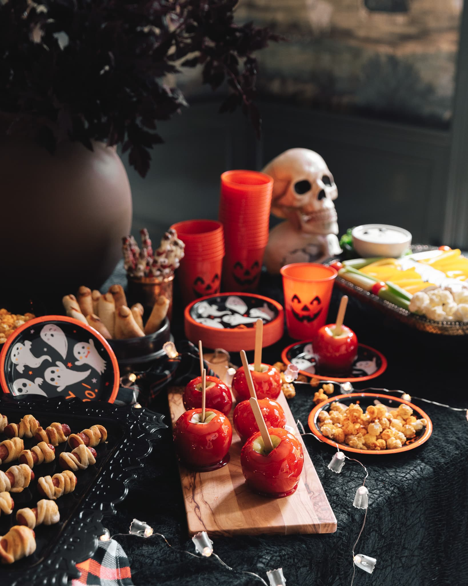
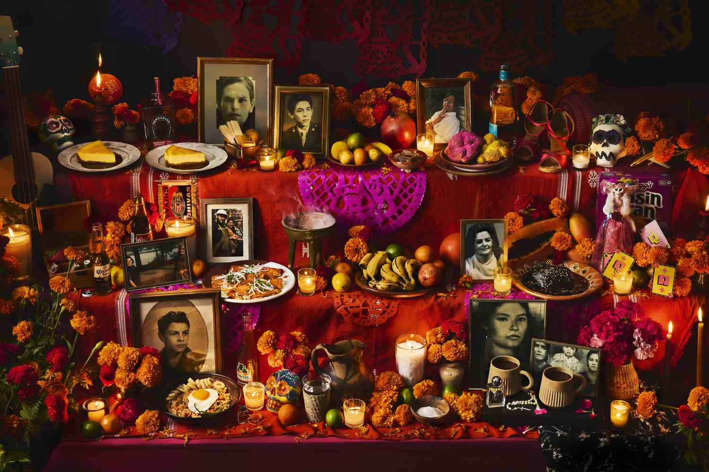
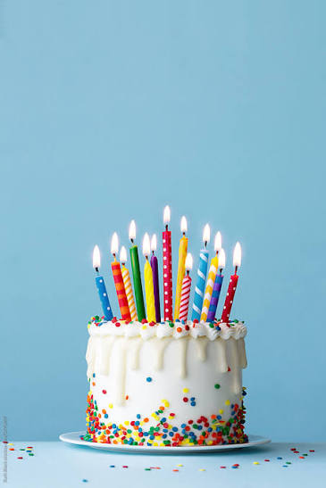
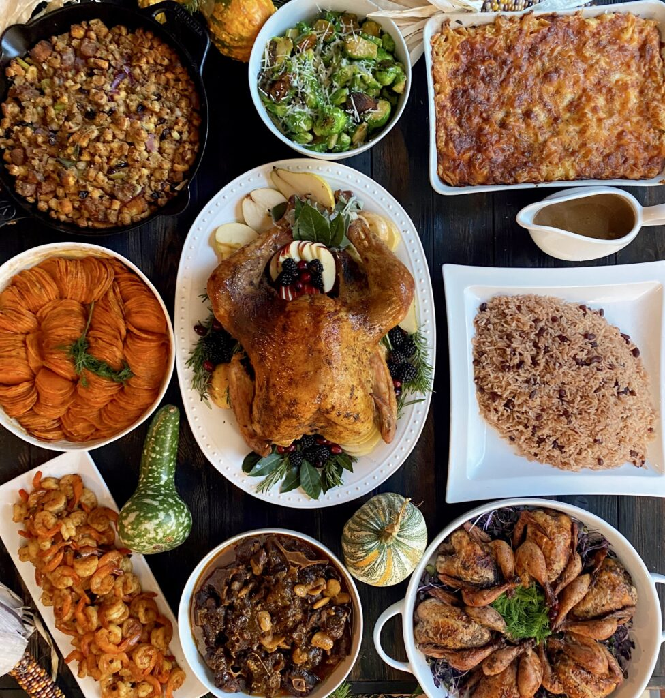

The fall holidays are my absolute favorite. There is Halloween on October 31st, Día de los Muertos on November 2nd, my birthday on November 18th, and Thanksgiving on the last Thursday of November. They are all times of celebration with family and friends.

Halloween has always been a fun holiday for me. When I was a child, I would go trick-or-treating, and now I usually attend a party. I enjoy choosing a yearly costume, eating chili and sweets, having delicious drinks, playing games, and spending time with loved ones. I don’t particularly enjoy the scary or gory aspects of Halloween, but a little spooky and cozy Halloween makes me look forward to it every year.

Día de los Muertos is a very special holiday to me. It is a time to remember and celebrate those who have passed on. I start the celebration by setting up a beautiful ofrenda with lots of candles and items that my loved ones enjoyed in their life. I tend to celebrate the most on November second. On this day, I spend time preparing a traditional Mexican meal with special holiday food, such as pan de muerto. When it is time to celebrate, I gather with my family to share the meal and exchange stories of our loved ones who have passed. It is a day to remember and appreciate those who came before us and the stories we get to pass on.

Well, of course one of my favorite holidays is my birthday! I am very grateful for the life I have, for the things I have achieved in my life, and for those who have helped me get to be where I am. For my birthday, I like to either have a big gathering with family and friends, or do something more intimate with my partner. I always eat my favorite foods and drink my favorite drinks, and soak in the love from the people around me. On this day, I feel very special and grateful for my life.

Thanksgiving, for me, is not about the holiday itself, but more about the festivities. I do not condone colonization, but it is a day to be with family and remember all that we are thankful for in life. The festivities start by watching the Macy’s Thanksgiving parade. I have loved watching this since I was a child. I love seeing the balloon characters and performers. Later in the day, my family gets together for a long evening of eating and spending time together. There is nothing quite like hours of appetizers, drinks, a large dinner, then a buffet of pies. My partner enjoys football, so now we watch the Thanksgiving game. This is a fun tradition he has added to the holiday. I also enjoy reflecting and sharing with my loved ones all that we are thankful for.